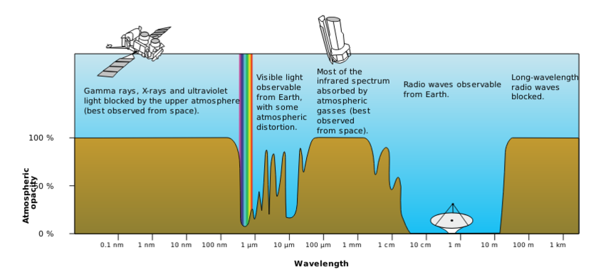
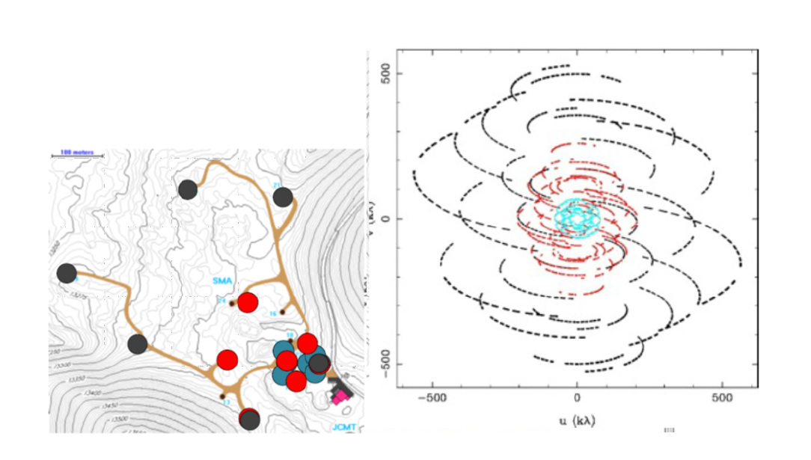
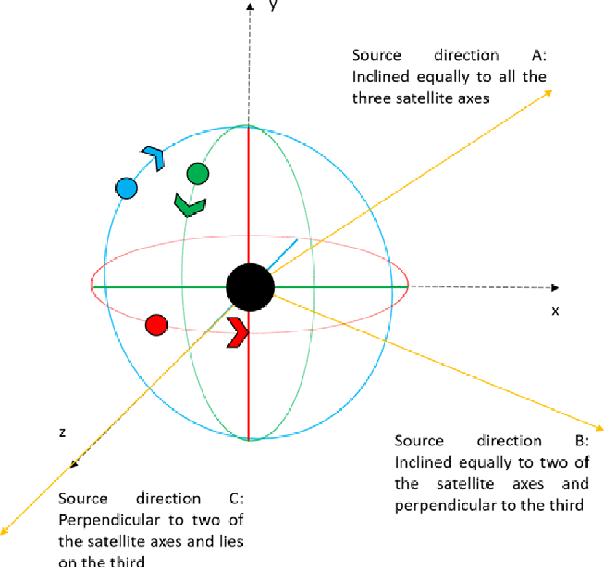
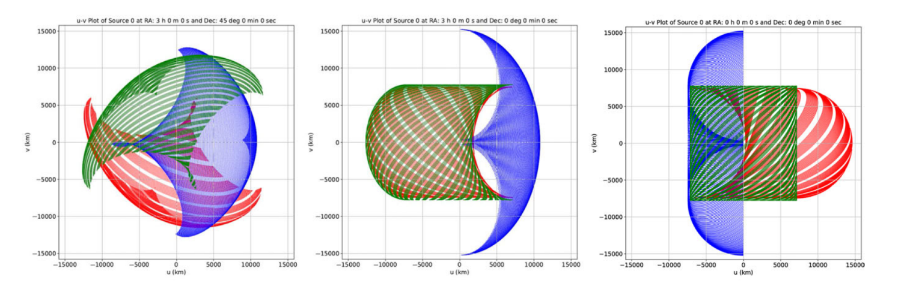

EARTH-SIZED TELESCOPES FOR ASTRONOMICAL OBSERVATIONS IN THE LOW RADIO FREQUENCIES
The study of the cosmos is only complete when we can receive and analyse data from the entire electromagnetic spectrum, ranging from picometer-sized gamma rays to several meters long radio waves. This realization is what led to the advent of multiwavelength astronomy. But even in today’s era when technology has paved the way for us to observe the sky in a very wide range of wavelengths, it still remains poorly explored at wavelengths greater than a few tens of meters. This is mainly because the Earth’s ionosphere blocks most of these wavelengths. Even if we could observe them, it would require us to build a telescope several kilometres wide to properly resolve the sources, which is physically impossible. This article is a review of a journal paper that tackles these issues by proposing to simulate an Earth-sized radio telescope. The paper dwells into some technical details on how we can achieve a radio telescope larger than the size of the Earth and discusses the advantages such a system would offer. This article tries to simplify the concepts involved, and introduce the readers to an exciting new domain in radio astronomy.
While it is for sure physically impossible to build a telescope larger than even a few hundreds of meters, you might be wondering how the paper suggests we build a telescope not just a few kilometres wide, but larger than the entire diameter of the Earth, which is just shy of 13,000km! To achieve such a feat, it is proposed we build several small observing elements and send them to space, to revolve around the Earth in different orbits. Then we employ some analysis techniques which can cumulatively be known as Very Long Baseline Interferometry (VLBI, or more specifically, orbiting VLBI in our case, as our observing elements are all in orbit) to “stitch” the multiple images taken by each of these elements and produce a high-resolution image of the entire sky. Before we dive further into the how, what and why of the paper, let us first understand in some detail, these concepts involved.
Introduction
Radio astronomy is a subfield of astronomy that studies the universe in the radio spectrum (ranging from 1mm to 100km wavelengths). To fulfil this purpose, radio astronomy takes multidisciplinary contributions from physics, electronics and computer sciences alike. Radio waves are so large that we cannot practically use the typical lens and mirror arrangements that we use to observe in most other electromagnetic (EM) spectra. Lucky for us, the larger wavelengths mean smaller frequencies, small enough that we can “see” the crests and troughs of the wave using an antenna – yes, the same antenna that is in our smartphones and TV dishes! In fact, we can actually use our smartphones and TV dishes to observe the radio sky, albeit with a few modifications.

Figure 1: The electromagnetic spectrum and the atmospheric opacity for different wavelengths. While the Earth’s atmosphere is almost completely transparent to short-wavelength radio waves, it is completely opaque to wavelengths longer than 15m. (Source: http://gisgeography.com/electromagnetic-radiation/)
A few advantages of observing in the radio frequencies include the fact that most of the high frequency radio waves completely pass through the Earth’s atmosphere. So, we are able to perform ground-based observations, which are cheaper and less complicated. It is also possible to observe astronomical objects or phenomena that are nearly impossible to detect in other wavelengths. But where there are advantages, there are disadvantages as well. Radio waves having wavelengths greater than 15m are blocked completely by the ionosphere, as can be seen from Figure 1, rendering it impossible to make any observations of the radio sky at those wavelengths using ground-based telescopes. Radio waves also tend to be plagued by man-made radio frequency interference (RFI). These can be any signals generated by us, such as the FM and TV frequencies, mobile communication signals, signals from any and all electronic equipment we use, all of which corrupt the astronomical radio signals, making it difficult to study them from the ground. Being able to see the sky at wavelengths greater than 15m is important, because it is expected to be extremely bright with never-before-seen astronomical phenomena. At the risk of using a few technical jargons, the sky at these frequencies will be dominated by non-thermal emissions, such as synchrotron emission, as well as free-free absorption from the thermal plasma that outer space has an abundance of. Interested readers can learn more about these phenomena by referring to this article. Therefore, in order to grab this unprecedented opportunity to observe these new astronomical processes and to avoid the drawbacks of ground-based radio telescopes, we must go to space.
VLBI, Visibility and the Image Plane
Interferometry is a measurement technique that relies on the phenomenon of interference of light waves to produce a fringe (interference) pattern. Young’s double slit experiment and Michelson’s interferometer are two common experiments that most of you might have performed in your physics labs in your high school days. VLBI is nothing but an extension of this technique for microwaves and radio waves. In VLBI, a signal from an astronomical source is collected using multiple radio telescopes (called as an array) placed some distance apart. Next, the distance between the radio telescopes is calculated using the difference between the time of arrival of the radio signals at different telescopes. This time difference is usually very small and is caused as the telescopes are located some finite distance apart. This allows observations of an object that are made simultaneously by many radio telescopes to be combined, thus creating a telescope with a size equal to the maximum separation between the telescopes, which is known as the maximum baseline. Since a radio telescope is nothing but an antenna, the signals received by each telescope are converted into voltages. These voltage signals are then amplified, filtered, digitized and then sent to the correlator, a digital device that cross-correlates the signals received from all the telescopes to produce the final image. In simple terms, the correlator “multiplies” each signal with every other signal and computes how well they are related. VLBI is a very popular technique in radio astronomy because it enables the distance between telescopes to be much greater than that possible with conventional interferometry, which requires antennas to be physically connected by coaxial cables or other types of transmission lines. This, in turn, allows for the resultant images to be of much higher resolution. This can be inferred using the Rayleigh’s criterion, which specifies the minimum separation between two astronomical sources that may be resolved into distinct objects. This angular resolution (expressed in arcseconds) for any telescope is given by:
where, λm is the wavelength (in meters) and D_km is the size of the effective aperture of the telescope (in kms). In case of any interferometric technique, the size of the effective aperture will be equivalent to the maximum baseline of the radio telescope array. So, to sum it up, we can infer from Rayleigh’s criterion that the angular resolution is directly proportional to the wavelength and inversely to the effective aperture. Therefore, to obtain resolutions comparable to that in visible astronomy, radio astronomers must build telescopes a billion times the size, which is impractical. Instead, they employ VLBI, which gives them the option to use multiple smaller aperture telescopes to synthesize a larger aperture, at the expense of collecting area.
ow that we understand the basics of VLBI, let us move on to the next important concept, which is visibility (also known as complex visibility or interferometric visibility by non-radio astronomers). In radio astronomy, visibility is defined as the response of the interferometer, which is the 2-dimensional Fourier transform of the sky brightness distribution. Fourier transform is a mathematical function that decomposes a time signal (which in our case, is the signal that a radio telescope receives) into the frequencies that make it up. This video beautifully explains the concept of Fourier transform, and is a must watch for anyone interested.
The sky brightness distribution is given by T(l,m), which is the intensity of radio waves coming from a particular location (l,m) in the sky, where l and m are angles and measured in radians. Finally, visibility is given by V(u,v), which is a complex function of signals correlated from all the radio telescopes in the array. This visibility is measured at a position (u,v) on any user-defined plane (called the image plane or the uv-plane) which usually is the ground for ground-based arrays. The u and v axes are measured in wavelengths (or km, in our case). The image plane can be considered as a simulated aperture of a telescope, and each telescope pair in the array would give two V(u,v) samples (for simplicity, we’ll hereon refer to it as just uv-sample) on the plane at a given time. So, an interferometer array with N telescopes will have N(N - 1)/2 baselines and give twice that number of samples.

Figure 2: The first picture shows three different configurations of the Submillimeter Array represented in blue, red and black colours. They are observing a source at a Dec of +22˚ at a frequency of 345 GHz. The second image shows the total uv-plane coverage when observing for 8 hours, as the telescopes move due to the Earth’s rotation, forming new baselines, and thus, new uv-samples. The black samples are due to the array configuration shown in black and so on. (Source: http://anita.edu.au/lectures)
To better understand the concept of image plane, imagine the screen on your phone or computer is the image plane. Now, let’s say every second a pair of telescopes in the interferometer array generates two samples, which correspond to two pixels on your screen. The more the telescopes you have in your array, the more samples are produced every second and the more pixels on your screen light up. Also, the longer you observe a source, the more unique baselines are formed, and again the more pixels on your screen light up. Ideally, we would want all the pixels on the screen to be lit up so that the source being observed is 100% imaged. But that is not possible because the telescopes in our array are separated from each other, and no matter how long you observe, there will always be dark spots on your screen, i.e., gaps on the image plane. What we can infer from this is that for better imaging, we would need better coverage of the uv-plane, which can be done by observing a specific source over a longer period of time. Refer to Figure 2 for a better visual explanation.
To get a better grasp on the concepts of VLBI, visibility, the image plane and radio interferometry in general, interested readers can refer to this article for a basic discussion and this one for a slightly more advanced coverage of the topics. If you aren’t much of a reader, then this 2-video series also does a fantastic job at simplifying these concepts.
The system proposed by the paper extends all these concepts into space, with the radio telescopes now aboard satellites revolving around the Earth. Orbiting VLBI is not a new concept in radio astronomy and the proof of concept was shown as early as 1986, by the Tracking and Data Relay Satellite System (TDRSS) launched by NASA. Following that came the Space VLBI Satellite: MUSES-B under the Japanese VLBI Space Observatory Program (VSOP) and RadioAstron (Spektr-R) operated by the Russian Astro Space Center. An extensive study of the past, present and future of space VLBI can be found in this paper.
But all of these multi-element space-based radio interferometers have only been used in conjunction with ground-based telescopes, therefore, rendering them unusable for observations in the lower frequency window that we’re interested in. The increasing interest in the low frequency radio sky, though, has resulted in several fully space-based interferometric missions being proposed such as the Low-Cost Space-based Ultra-long wavelength Radio Observatory (SURO-LC) and Orbiting Low Frequency Antennas for Radio Astronomy (OLFAR), to name a few. These proposed swarms of small satellites would be orbiting close to the Earth or at other special locations within our solar system, such as the Lagrange L2 point or the lunar orbit and would have a large number of observing elements working together in aperture synthesis mode, but with baseline lengths limited to only about a 100 km or so. The novelty of the model proposed by this paper lies in the fact that by performing sensitive imaging observations with very high angular resolutions at low frequencies, we can reveal astronomical objects and phenomena that have never been seen before. These are the prospects that led to the simulation of a suitable space interferometer system so as to enable such high-resolution imaging.
The Model
The model was simulated keeping in consideration to have a minimal number of observing elements to view the entire sky. Intuitively, we can see that having just two telescopes in space is not going to be sufficient, so the model begins by assuming three observing elements mounted on satellites in mutually orthogonal and near-circular Low Earth Orbits (LEO), which is an orbit ranging from 300km to 2000km above the Earth’s surface, as shown in Figure 3. Each of the observing elements is assumed to have a uniform field of view (FoV) of 2π steradians (in other words, the telescope can see the entire hemisphere in front of it). Such a configuration would allow us to have baselines of over 15000km, which is larger than the diameter of the Earth, thus enabling angular resolution as fine as 1 arcsec (from Rayleigh’s criterion) even at 4 MHz (or wavelength of 75m). The three satellites have different orbital heights, making their orbital periods distinct from each other. These orbital heights are deliberately chosen such that the orbits are mutually asynchronous. This ensures that the apparent baselines are distinctly different during each orbital cycle, thus giving a significantly better coverage of the uv-plane in a relatively short time span. The orbital speeds and time periods of the satellites can be calculated from the Newton’s law of gravitation:
where, G (= 6.6710-11 Nm2/kg2) is the universal gravitational constant, Me (= 5.9821024 kg), R (= 6371km) is the radius of Earth, and h is the orbital height of the satellite above the Earth’s surface.

Figure 3: An illustration of the model configuration: The near circular orbits (not to scale, and appearing in projection as ellipses) for the three satellites are shown. The first satellite has an equatorial orbit (red), and the other two (Satellites 2 and 3) have polar orbits (blue and green, respectively). The black circle in the centre denotes the Earth. (Source: Figure 2 of the paper.)
The various parameter values defined for each satellite are given in Table 1. These values were obtained by extensively testing the sensitivity of the uv-plane coverage to these parameters. The orbital height of satellite 1 is chosen to be greater than 700 km so as to be able to avoid the effects of atmospheric drag which are substantial at heights below 400 km as well as to avoid attenuation of the radio waves due to the ionospheric plasma which is significant at orbital heights below 700 km.
| Index | Orbital Height (h) | Orbital Speed (s) | Time period (T) |
|---|---|---|---|
| Satellite 1 | 770 km | 7.48 km/s | 100.01 min |
| Satellite 2 | 1085 km | 7.32 km/s | 106.70 min |
| Satellite 3 | 1400 km | 7.17 km/s | 113.53 min |
Since the model is different from the usual Earth-based and Earth-and-space-based interferometer systems, the typical definition of the uv-plane as the ground plane would not suffice. So, the uv-plane was explicitly defined in a different manner, with its origin at the centre of the Earth and the plane perpendicular to the direction of the source being observed. After extensive testing, an observing period of 16 days was found to be optimal. In order to obtain the maximum and minimum possible uv-plane coverages during this observation period as well as to find out the extent of the coverages, three exclusive source directions are chosen representing the extreme cases (as shown in Figure 3). These directions, namely A, B, and C, are defined as follows:
- Direction A: RA = 03:00:00 Dec = +45 deg, inclined equally to all three satellite orbit axes.
- Direction B: RA = 03:00:00 Dec = 0.0 deg, representing a set of specific directions that are perpendicular to one of the satellite orbit axes (or in the plane of that orbit) and inclined equally with the other two.
- Direction C: RA = 00:00:00 Dec = 0.0 deg, perpendicular to any two of the satellite orbit axes and parallel to the third axis.
It can be easily visualized that any source in the sky would fall within the bounds of these three directions relative to them. The corresponding uv-plane coverages are shown in Figure 4 and the evolution of the coverages over these 16 days can be viewed at this link.

Figure 4: The uv-coverages over the duration of 16 days, for the three source directions A, B and C from left to right. The red, blue, and green tracks represent the baseline corresponding to the satellite pairs 1–2, 2–3, and 3–1, respectively. The u and v axes are indicated in km. (Source: Figure 3 of the paper. )
Measuring this coverage quantitatively, it is found that the percentage coverage lies between a maximum of 64% and a minimum of 55.5% for any source for an observation period of 16 days, which is significantly greater than what we usually obtain with ground-based interferometer setups (which is typically around 15% for the same observing duration). So, the model not only has much greater baselines, but is also capable of giving significantly better coverage for any source, which would ultimately result in very fine angular resolutions and better imaging capabilities at low radio frequencies.
The paper then proceeds to discuss the sensitivity of this coverage to the satellite orbits so as to be able to determine the best relative positions of the satellites with respect to each other. Next, it discusses the quality of the final image based on the simulations. Finally, it compares our minimal 3-satellite model with another 4-satellite model, to examine how much of an advantage adding a fourth satellite would be, how that would be reflected in terms of the improvement in uv-coverage and the time taken to obtain the desired coverage. The results indicate that even with a system of four satellites (and six baselines) the total percentage coverage is essentially similar to that obtained with three satellites when observed for the same time duration of 16 days. Although it is noted that when observed for shorter durations, the percentage coverage by the 4-satellite system is noticeably more than that of the 3-satellite one.
In conclusion, we discuss the importance of a fully space-based interferometer to observe the low frequency sky with very high angular resolutions and uv-plane coverages and that a minimal configuration with just three elements is optimum for the purpose scientifically, technologically and economically. Easier said than done though, because going to space entails its own challenges. While an elaborate study of them is beyond the scope of this paper, it does acknowledge some of the major ones and discusses possible solutions, showing that there are ways to not only overcome these challenges, but also use them to our advantage.
Original paper: A minimal space interferometer configuration for imaging at low radio frequencies
First Author: Akhil Jaini
Co-authors: Avinash A. Deshpande, Sainath Bitragunta
First author’s Institution: Indian Institute of Astrophysics, Bengaluru, Karnataka, India – 560034;
First Author’s Institution: (Where the research was conducted): Raman Research Institute, Bangalore, India; Birla Institute of Technology and Science – Pilani, Pilani, India